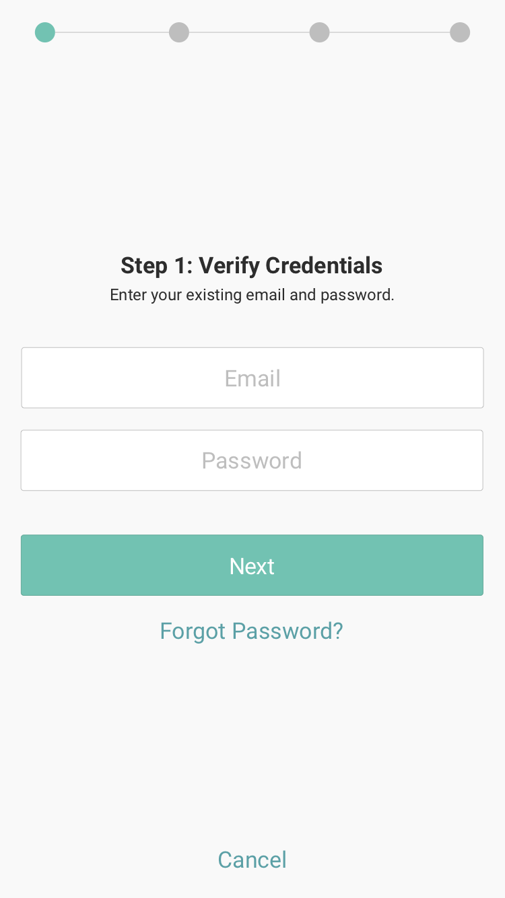
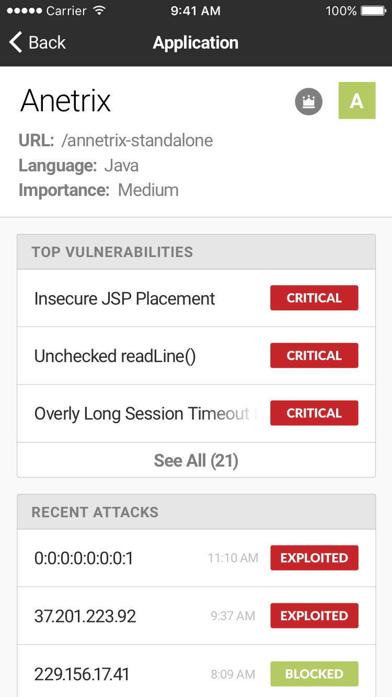

CONTRAST IOS APP
JANUARY 2016
This design was created for Contrast Security, an application security softeware company. I was tasked with translating their web platform to mobile devices, while retaining essential functionality that users would require on the go. This means I had to adhere to both Apple's and Contrast's design guidelines, without sacrificing the user's ability to understand the application.